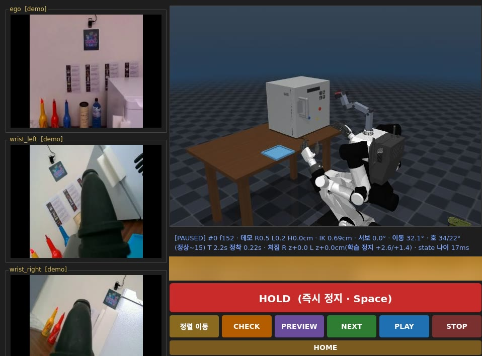

Robot learning · System integration · Real-robot experiments
A Rainbow Robotics RB-Y1 with two dexterous hands takes one command — “take the Coke out of the fridge, then make a cocktail” — and carries it out as seven learned skills in a row. I trained the VLA skill policies, integrated them with a VLM planner and progress monitor, and built the runtime in between: a safety layer that every command passes through, switching between models through explicit state transitions, and playback that runs a learned skill, a recorded trajectory or a predefined motion, whichever fits the moment.
“First take the Coke out of the fridge, then make a cocktail: orange first, then blue.” Open the fridge, take out the can, close the fridge, pick up a glass, pour, pour again, place the glass — handed between four VLA policy servers through one guarded control path. The operator arms the run once and keeps a hand on HOLD.
Fine-tuned GR00T-based VLA policies for the cocktail skills — picking up cans and glasses, pouring, and shaking — including separate per-segment models so a task can be resumed from the middle.
Each plan step from the VLM planner (skill + object) becomes an executable recipe; the VLM monitor’s progress signal decides when a policy stops and the next one starts. One bridge, one contract, one execution ledger.
A single gateway owns the body, hands and neck. Out-of-limit commands are rejected, not clipped; watchdogs on every link; FAULT is cleared only by a human; real-robot runs need an approval latch and a locked mode.
All policy servers stay loaded; exactly one holds the motion lease. A control epoch drops stale actions from the previous model, the controller switches between impedance and position mode, and a held object stays gripped across the hand-off.
Control modes (HOLD, MANUAL, SEMIAUTO, AUTO, FAULT) and each subtask’s lifecycle — lease, check, align, run, hold, done — are explicit, logged and only move along allowed edges.
For each step the runtime plays what fits the moment: a learned policy, a recorded trajectory under its recorded control mode, or a predefined motion such as start-pose alignment, a via-waypoint, or HOME after an abnormal stop.
The VLM planner/monitor models and some of the skill policies come from teammates; I integrated them with the skills I trained. Everything inside the green frame is the runtime I designed and built.
I fine-tuned GR00T-based VLA policies for the skills the cocktail task needs, each with its own start pose, safety limits and recorded reference demonstrations, and registered them in the same catalog as the team’s skills.
| Skill | What it does | Notes |
|---|---|---|
| Can pick-and-place | Take a can (Coke, Pocari) and place it on the tray | Used for “take the Coke out of the fridge” |
| Glass pick | Pick up an empty glass for pouring | First step of every cocktail |
| Bottle pour | Pour from a small bottle into the shaker (left hand) | Paired with a recorded-trajectory version |
| Shake | Pick up the shaker, shake, put it back | Three models: full sequence, shake only, pick/place only — each segment can also be replayed from data |
The VLM planner reads the scene and the catalogs and returns a plan as skill + object pairs. The integration layer maps each pair to a recipe — which VLA server, which start pose, which control mode, what to check first, and the time and chunk ceilings for that step — and refuses plans that break task preconditions (for example, retrieving a can before the door is open).
While a policy runs, the VLM monitor reports progress about once a second from the chest and wrist cameras. Its judgement is only trusted after the policy has actually started moving, and its “done” signal triggers the soft stop and the hand-off to the next step. The planner can propose, but it can never approve a motion on its own.
| MANUAL | SEMIAUTO | AUTO | |
|---|---|---|---|
| Picks the skill | operator | planner | planner |
| Approval | — | every subtask | arm once |
| During a run | drives each phase | HOLD / abort | HOLD / E-stop |
| End of episode | — | HOME card | automatic HOME |

The fridge task alone uses two model families — one for the door, another for the can — and in the cocktail a glass picked up by one model is poured by another. Switching has to be boring.
All VLA servers stay warm on one GPU; each runs behind its own worker process and proxy, so swapping models never means reloading weights or touching the robot driver.
Exactly one worker holds the motion lease. Every swap bumps the control epoch, so any late action from the previous model is dropped at the gateway.
Door skills run in impedance control, pick and pour in position control; the switch takes about 145 ms. A glass held in the right hand stays gripped while the next model takes over.
Two state machines run the whole system: the gateway’s control mode, and the lifecycle of each subtask. Only allowed edges exist; every transition is logged with its reason.
Not every step should be a neural network. For each subtask the runtime chooses between three kinds of playback — a policy, a recorded trajectory, or a predefined function — based on the robot’s current state and how the previous step ended.
| Situation | What plays |
|---|---|
| The step needs perception and adaptation | policy VLA server for that skill, chunked or streaming |
| A segment is better served by a known-good demonstration | trajectory recorded data replayed under the control mode it was recorded in (position or impedance), at 0.25–1×, checked by the gateway before it starts |
| The robot is not at the skill’s start pose | function ramp to the start pose — through an intermediate waypoint when the gap is large |
| Already within 1° of the replay start | function skip the alignment ramp and play immediately |
| The previous step ended abnormally | function HOME is inserted before the next step |
| The episode is over (AUTO) | function automatic HOME |
| Replay starts too far from where the robot is, or drifts while playing | refused above an 8° start gap · aborted above a 20° tracking error |
The shaking task can be played as one model, as per-segment models (pick · shake · place), or as per-segment recorded trajectories — the same catalog entry point for all of them.
The whole pipeline on the real robot, from the command to the last subtask. Video by YoungChae Son · open on YouTube.
| Date | Mode | Task | Episodes | All subtasks done |
|---|---|---|---|---|
| Oct 16 | SEMIAUTO | Fridge: open → take can → close (3) | 27 | 13 |
| Oct 20 | SEMIAUTO | Cocktail: pick glass → pour → pour → place (4) | 19 | 12 |
| Oct 21 | AUTO | Fridge + cocktail from one sentence (7) | 18 | 6 · 7.7–8.6 min each |
Counts come from the runtime’s execution ledger; an episode counts when every subtask reported done. Episodes include runs the operator stopped on purpose while tuning, and runs handed back to MANUAL. On Oct 21 the fridge step failed the first five AUTO attempts; matching the AUTO recipe to the start-up sequence used in MANUAL (via-waypoint, align, then check) fixed it, and complete runs followed.
Clipping an out-of-range command hides a bug and still moves the robot somewhere nobody asked for. The gateway refuses the command, counts the violation and escalates to FAULT.
The very first real-robot run ended in an operator E-stop and exposed a stale-target hazard when commands stop arriving. The robot-side loop now exits after 30 consecutive send failures instead of replaying an old target.
After about two hours the robot-side loop held its whole recording in memory, starved the interpreter lock, and opened multi-second gaps that tripped the body-link watchdog. Traced from the logs; fixed with an idle-time refresh and a watchdog.
Routing a policy through the gateway must not change what it does. On the same recorded inputs, commands through the new path matched the original stand-alone clients exactly — zero difference for body, hands and neck. 754 automated tests and Docker-simulator runs gate every change before it reaches the robot.